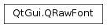

QRawFont¶
Synopsis¶
Functions¶
- def
__eq__(other) - def
__ne__(other) - def
advancesForGlyphIndexes(glyphIndexes) - def
advancesForGlyphIndexes(glyphIndexes, layoutFlags) - def
alphaMapForGlyph(glyphIndex[, antialiasingType=SubPixelAntialiasing[, transform=QTransform()]]) - def
ascent() - def
averageCharWidth() - def
boundingRect(glyphIndex) - def
capHeight() - def
descent() - def
familyName() - def
fontTable(tagName) - def
glyphIndexesForString(text) - def
hintingPreference() - def
isValid() - def
leading() - def
lineThickness() - def
loadFromData(fontData, pixelSize, hintingPreference) - def
loadFromFile(fileName, pixelSize, hintingPreference) - def
maxCharWidth() - def
pathForGlyph(glyphIndex) - def
pixelSize() - def
setPixelSize(pixelSize) - def
style() - def
styleName() - def
supportedWritingSystems() - def
supportsCharacter(character) - def
supportsCharacter(ucs4) - def
swap(other) - def
underlinePosition() - def
unitsPerEm() - def
weight() - def
xHeight()
Detailed Description¶
The
PySide2.QtGui.QRawFontclass provides access to a single physical instance of a font.Note
PySide2.QtGui.QRawFontis a low level class. For most purposesPySide2.QtGui.QFontis a more appropriate class.Most commonly, when presenting text in a user interface, the exact fonts used to render the characters is to some extent unknown. This can be the case for several reasons: For instance, the actual, physical fonts present on the target system could be unexpected to the developers, or the text could contain user selected styles, sizes or writing systems that are not supported by font chosen in the code.
Therefore, Qt’s
PySide2.QtGui.QFontclass really represents a query for fonts. When text is interpreted, Qt will do its best to match the text to the query, but depending on the support, different fonts can be used behind the scenes.For most use cases, this is both expected and necessary, as it minimizes the possibility of text in the user interface being undisplayable. In some cases, however, more direct control over the process might be useful. It is for these use cases the
PySide2.QtGui.QRawFontclass exists.A
PySide2.QtGui.QRawFontobject represents a single, physical instance of a given font in a given pixel size. I.e. in the typical case it represents a set of TrueType or OpenType font tables and uses a user specified pixel size to convert metrics into logical pixel units. It can be used in combination with theQGlyphRunclass to draw specific glyph indexes at specific positions, and also have accessors to some relevant data in the physical font.
PySide2.QtGui.QRawFontonly provides support for the main font technologies: GDI and DirectWrite on Windows platforms, FreeType on Linux platforms and CoreText on macOS . For other font back-ends, the APIs will be disabled.
PySide2.QtGui.QRawFontcan be constructed in a number of ways:
- It can be constructed by calling QTextLayout::glyphs() or QTextFragment::glyphs(). The returned QGlyphs objects will contain
PySide2.QtGui.QRawFontobjects which represent the actual fonts used to render each portion of the text.- It can be constructed by passing a
PySide2.QtGui.QFontobject toQRawFont.fromFont(). The function will return aPySide2.QtGui.QRawFontobject representing the font that will be selected as response to thePySide2.QtGui.QFontquery and the selected writing system.- It can be constructed by passing a file name or
PySide2.QtCore.QByteArraydirectly to thePySide2.QtGui.QRawFontconstructor, or by callingPySide2.QtGui.QRawFont.loadFromFile()orPySide2.QtGui.QRawFont.loadFromData(). In this case, the font will not be registered inPySide2.QtGui.QFontDatabase, and it will not be available as part of regular font selection.
PySide2.QtGui.QRawFontis considered local to the thread in which it is constructed (either using a constructor, or by callingPySide2.QtGui.QRawFont.loadFromData()orPySide2.QtGui.QRawFont.loadFromFile()). ThePySide2.QtGui.QRawFontcannot be moved to a different thread, but will have to be recreated in the thread in question.Note
For the requirement of caching glyph indexes and font selections for static text to avoid reshaping and relayouting in the inner loop of an application, a better choice is the
PySide2.QtGui.QStaticTextclass, since it optimizes the memory cost of the cache and also provides the possibility of paint engine specific caches for an additional speed-up.
-
class
PySide2.QtGui.QRawFont¶ -
class
PySide2.QtGui.QRawFont(fontData, pixelSize[, hintingPreference=QFont.PreferDefaultHinting]) -
class
PySide2.QtGui.QRawFont(other) -
class
PySide2.QtGui.QRawFont(fileName, pixelSize[, hintingPreference=QFont.PreferDefaultHinting]) Parameters: - fontData –
PySide2.QtCore.QByteArray - pixelSize –
PySide2.QtCore.qreal - other –
PySide2.QtGui.QRawFont - hintingPreference –
PySide2.QtGui.QFont.HintingPreference - fileName – unicode
Constructs an invalid
PySide2.QtGui.QRawFont.Constructs a
PySide2.QtGui.QRawFontrepresenting the font contained in the suppliedfontDatafor the size (in pixels) given bypixelSize, and using the hinting preference specified byhintingPreference.Note
The data must contain a TrueType or OpenType font.
Creates a
PySide2.QtGui.QRawFontwhich is a copy ofother.Constructs a
PySide2.QtGui.QRawFontrepresenting the font contained in the file referenced byfileNamefor the size (in pixels) given bypixelSize, and using the hinting preference specified byhintingPreference.Note
The referenced file must contain a TrueType or OpenType font.
- fontData –
-
PySide2.QtGui.QRawFont.AntialiasingType¶ This enum represents the different ways a glyph can be rasterized in the function
PySide2.QtGui.QRawFont.alphaMapForGlyph().Constant Description QRawFont.PixelAntialiasing Will rasterize by measuring the coverage of the shape on whole pixels. The returned image contains the alpha values of each pixel based on the coverage of the glyph shape. QRawFont.SubPixelAntialiasing Will rasterize by measuring the coverage of each subpixel, returning a separate alpha value for each of the red, green and blue components of each pixel.
-
PySide2.QtGui.QRawFont.LayoutFlag¶ This enum tells the function
PySide2.QtGui.QRawFont.advancesForGlyphIndexes()how to calculate the advances.Constant Description QRawFont.SeparateAdvances Will calculate the advance for each glyph separately. QRawFont.KernedAdvances Will apply kerning between adjacent glyphs. Note that OpenType GPOS based kerning is currently not supported. QRawFont.UseDesignMetrics Use design metrics instead of hinted metrics adjusted to the resolution of the paint device. Can be OR-ed with any of the options above.
-
PySide2.QtGui.QRawFont.advancesForGlyphIndexes(glyphIndexes, layoutFlags)¶ Parameters: - glyphIndexes –
- layoutFlags –
PySide2.QtGui.QRawFont.LayoutFlags
Return type: Returns the
PySide2.QtGui.QRawFont‘s advances for each of theglyphIndexesin pixel units. The advances give the distance from the position of a given glyph to where the next glyph should be drawn to make it appear as if the two glyphs are unspaced. How the advances are calculated is controlled bylayoutFlags.
-
PySide2.QtGui.QRawFont.advancesForGlyphIndexes(glyphIndexes) Parameters: glyphIndexes – Return type: This is an overloaded function.
Returns the
PySide2.QtGui.QRawFont‘s advances for each of theglyphIndexesin pixel units. The advances give the distance from the position of a given glyph to where the next glyph should be drawn to make it appear as if the two glyphs are unspaced. The advance of each glyph is calculated separately.
-
PySide2.QtGui.QRawFont.alphaMapForGlyph(glyphIndex[, antialiasingType=SubPixelAntialiasing[, transform=QTransform()]])¶ Parameters: - glyphIndex –
PySide2.QtCore.quint32 - antialiasingType –
PySide2.QtGui.QRawFont.AntialiasingType - transform –
PySide2.QtGui.QTransform
Return type: This function returns a rasterized image of the glyph at the given
glyphIndexin the underlying font, using thetransformspecified. If thePySide2.QtGui.QRawFontis not valid, this function will return an invalidPySide2.QtGui.QImage.If the font is a color font, then the resulting image will contain the rendered glyph at the current pixel size. In this case, the
antialiasingTypewill be ignored.Otherwise, if
antialiasingTypeis set toQRawFont.SubPixelAntialiasing, then the resulting image will be inQImage.Format_RGB32and the RGB values of each pixel will represent the subpixel opacities of the pixel in the rasterization of the glyph. Otherwise, the image will be in the format ofQImage.Format_Indexed8and each pixel will contain the opacity of the pixel in the rasterization.See also
PySide2.QtGui.QRawFont.pathForGlyph()QPainter.drawGlyphRun()- glyphIndex –
-
PySide2.QtGui.QRawFont.ascent()¶ Return type: PySide2.QtCore.qrealReturns the ascent of this
PySide2.QtGui.QRawFontin pixel units.The ascent of a font is the distance from the baseline to the highest position characters extend to. In practice, some font designers break this rule, e.g. when they put more than one accent on top of a character, or to accommodate an unusual character in an exotic language, so it is possible (though rare) that this value will be too small.
See also
-
PySide2.QtGui.QRawFont.averageCharWidth()¶ Return type: PySide2.QtCore.qrealReturns the average character width of this
PySide2.QtGui.QRawFontin pixel units.See also
-
PySide2.QtGui.QRawFont.boundingRect(glyphIndex)¶ Parameters: glyphIndex – PySide2.QtCore.quint32Return type: PySide2.QtCore.QRectFReturns the smallest rectangle containing the glyph with the given
glyphIndex.
-
PySide2.QtGui.QRawFont.capHeight()¶ Return type: PySide2.QtCore.qrealReturns the cap height of this
PySide2.QtGui.QRawFontin pixel units.The cap height of a font is the height of a capital letter above the baseline. It specifically is the height of capital letters that are flat - such as H or I - as opposed to round letters such as O, or pointed letters like A, both of which may display overshoot.
See also
-
PySide2.QtGui.QRawFont.descent()¶ Return type: PySide2.QtCore.qrealReturns the descent of this
PySide2.QtGui.QRawFontin pixel units.The descent is the distance from the base line to the lowest point characters extend to. In practice, some font designers break this rule, e.g. to accommodate an unusual character in an exotic language, so it is possible (though rare) that this value will be too small.
See also
-
PySide2.QtGui.QRawFont.familyName()¶ Return type: unicode Returns the family name of this
PySide2.QtGui.QRawFont.
-
PySide2.QtGui.QRawFont.fontTable(tagName)¶ Parameters: tagName – str Return type: PySide2.QtCore.QByteArrayRetrieves the sfnt table named
tagNamefrom the underlying physical font, or an empty byte array if no such table was found. The returned font table’s byte order is Big Endian, like the sfnt format specifies. ThetagNamemust be four characters long and should be formatted in the default endianness of the current platform.
-
static
PySide2.QtGui.QRawFont.fromFont(font[, writingSystem=QFontDatabase.Any])¶ Parameters: - font –
PySide2.QtGui.QFont - writingSystem –
PySide2.QtGui.QFontDatabase.WritingSystem
Return type: Fetches the physical representation based on a
fontquery. The physical font returned is the font that will be preferred by Qt in order to display text in the selectedwritingSystem.Warning
This function is potentially expensive and should not be called in performance sensitive code.
- font –
-
PySide2.QtGui.QRawFont.glyphIndexesForString(text)¶ Parameters: text – unicode Return type: Converts the string of unicode points given by
textto glyph indexes using the CMAP table in the underlying font, and returns a vector containing the result.Note that, in cases where there are other tables in the font that affect the shaping of the text, the returned glyph indexes will not correctly represent the rendering of the text. To get the correctly shaped text, you can use
PySide2.QtGui.QTextLayoutto lay out and shape the text, then call QTextLayout::glyphs() to get the set of glyph index list andPySide2.QtGui.QRawFontpairs.See also
PySide2.QtGui.QRawFont.advancesForGlyphIndexes()PySide2.QtGui.QRawFont.glyphIndexesForChars()QGlyphRunQTextLayout.glyphRuns()QTextFragment.glyphRuns()
-
PySide2.QtGui.QRawFont.hintingPreference()¶ Return type: PySide2.QtGui.QFont.HintingPreferenceReturns the hinting preference used to construct this
PySide2.QtGui.QRawFont.See also
-
PySide2.QtGui.QRawFont.isValid()¶ Return type: PySide2.QtCore.boolReturns
trueif thePySide2.QtGui.QRawFontis valid and false otherwise.
-
PySide2.QtGui.QRawFont.leading()¶ Return type: PySide2.QtCore.qrealReturns the leading of this
PySide2.QtGui.QRawFontin pixel units.This is the natural inter-line spacing.
See also
-
PySide2.QtGui.QRawFont.lineThickness()¶ Return type: PySide2.QtCore.qrealReturns the thickness for drawing lines (underline, overline, etc.) along with text drawn in this font.
-
PySide2.QtGui.QRawFont.loadFromData(fontData, pixelSize, hintingPreference)¶ Parameters: - fontData –
PySide2.QtCore.QByteArray - pixelSize –
PySide2.QtCore.qreal - hintingPreference –
PySide2.QtGui.QFont.HintingPreference
Replaces the current
PySide2.QtGui.QRawFontwith the font contained in the suppliedfontDatafor the size (in pixels) given bypixelSize, and using the hinting preference specified byhintingPreference.The
fontDatamust contain a TrueType or OpenType font.- fontData –
-
PySide2.QtGui.QRawFont.loadFromFile(fileName, pixelSize, hintingPreference)¶ Parameters: - fileName – unicode
- pixelSize –
PySide2.QtCore.qreal - hintingPreference –
PySide2.QtGui.QFont.HintingPreference
Replaces the current
PySide2.QtGui.QRawFontwith the contents of the file referenced byfileNamefor the size (in pixels) given bypixelSize, and using the hinting preference specified byhintingPreference.The file must reference a TrueType or OpenType font.
-
PySide2.QtGui.QRawFont.maxCharWidth()¶ Return type: PySide2.QtCore.qrealReturns the width of the widest character in the font.
See also
-
PySide2.QtGui.QRawFont.__ne__(other)¶ Parameters: other – PySide2.QtGui.QRawFontReturn type: PySide2.QtCore.boolReturns
trueif thisPySide2.QtGui.QRawFontis not equal toother. Otherwise, returnsfalse.
-
PySide2.QtGui.QRawFont.__eq__(other)¶ Parameters: other – PySide2.QtGui.QRawFontReturn type: PySide2.QtCore.boolReturns
trueif thisPySide2.QtGui.QRawFontis equal toother. Otherwise, returnsfalse.
-
PySide2.QtGui.QRawFont.pathForGlyph(glyphIndex)¶ Parameters: glyphIndex – PySide2.QtCore.quint32Return type: PySide2.QtGui.QPainterPathThis function returns the shape of the glyph at a given
glyphIndexin the underlying font if thePySide2.QtGui.QRawFontis valid. Otherwise, it returns an emptyPySide2.QtGui.QPainterPath.The returned glyph will always be unhinted.
-
PySide2.QtGui.QRawFont.pixelSize()¶ Return type: PySide2.QtCore.qrealReturns the pixel size set for this
PySide2.QtGui.QRawFont. The pixel size affects how glyphs are rasterized, the size of glyphs returned byPySide2.QtGui.QRawFont.pathForGlyph(), and is used to convert internal metrics from design units to logical pixel units.
-
PySide2.QtGui.QRawFont.setPixelSize(pixelSize)¶ Parameters: pixelSize – PySide2.QtCore.qrealSets the pixel size with which this font should be rendered to
pixelSize.See also
-
PySide2.QtGui.QRawFont.style()¶ Return type: PySide2.QtGui.QFont.StyleReturns the style of this
PySide2.QtGui.QRawFont.See also
-
PySide2.QtGui.QRawFont.styleName()¶ Return type: unicode Returns the style name of this
PySide2.QtGui.QRawFont.See also
-
PySide2.QtGui.QRawFont.supportedWritingSystems()¶ Return type: Returns a list of writing systems supported by the font according to designer supplied information in the font file. Please note that this does not guarantee support for a specific unicode point in the font. You can use the
PySide2.QtGui.QRawFont.supportsCharacter()to check support for a single, specific character.Note
The list is determined based on the unicode ranges and codepage ranges set in the font’s OS/2 table and requires such a table to be present in the underlying font file.
-
PySide2.QtGui.QRawFont.supportsCharacter(character)¶ Parameters: character – PySide2.QtCore.QCharReturn type: PySide2.QtCore.boolReturns
trueif the font has a glyph that corresponds to the givencharacter.
-
PySide2.QtGui.QRawFont.supportsCharacter(ucs4) Parameters: ucs4 – PySide2.QtCore.uintReturn type: PySide2.QtCore.boolThis is an overloaded function.
Returns
trueif the font has a glyph that corresponds to the UCS-4 encoded characterucs4.
-
PySide2.QtGui.QRawFont.swap(other)¶ Parameters: other – PySide2.QtGui.QRawFontSwaps this raw font with
other. This function is very fast and never fails.
-
PySide2.QtGui.QRawFont.underlinePosition()¶ Return type: PySide2.QtCore.qrealReturns the position from baseline for drawing underlines below the text rendered with this font.
-
PySide2.QtGui.QRawFont.unitsPerEm()¶ Return type: PySide2.QtCore.qrealReturns the number of design units define the width and height of the em square for this
PySide2.QtGui.QRawFont. This value is used together with the pixel size when converting design metrics to pixel units, as the internal metrics are specified in design units and the pixel size gives the size of 1 em in pixels.
-
PySide2.QtGui.QRawFont.weight()¶ Return type: PySide2.QtCore.intReturns the weight of this
PySide2.QtGui.QRawFont.See also
-
PySide2.QtGui.QRawFont.xHeight()¶ Return type: PySide2.QtCore.qrealReturns the of this
PySide2.QtGui.QRawFontin pixel units.This is often but not always the same as the height of the character ‘x’.
See also
© 2018 The Qt Company Ltd. Documentation contributions included herein are the copyrights of their respective owners. The documentation provided herein is licensed under the terms of the GNU Free Documentation License version 1.3 as published by the Free Software Foundation. Qt and respective logos are trademarks of The Qt Company Ltd. in Finland and/or other countries worldwide. All other trademarks are property of their respective owners.